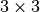
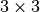

Rigid Motion¶
Frames and rigid bodies¶
A frame  is an abstract class which defines the position and
orientation of a particular part of the system.
The frame class has three concrete subclasses, Body,
SubFrame and MovingSubFrame.
is an abstract class which defines the position and
orientation of a particular part of the system.
The frame class has three concrete subclasses, Body,
SubFrame and MovingSubFrame.
The Body class incorporates the inertia and viscosity properties of some rigid parts. In a general manner, the inertia matrix is defined as follows
where represents the center of mass location relative to  the body
frame
the body
frame  , is skew-symetric matrix and is
transposition.
Bodies can have some subframes to locate some specific locations, as shown in
the image below where has 2 subframes, and .
, is skew-symetric matrix and is
transposition.
Bodies can have some subframes to locate some specific locations, as shown in
the image below where has 2 subframes, and .
{kind=link}
Position of a coordinate frame¶
An homogeneous matrix  is a matrix of the form
is a matrix of the form
with  and .
and .
The pose (position and orientation, also known as the configuration)
of a (right-handed) coordinate frame regarding to a reference
(right-handed) coordinate frame  : can be described by an
homogeneous matrix
: can be described by an
homogeneous matrix
with:
- defined as the column vector of coordinates of
the origin of expressed in .
 defined as the  matrix with the columns equal to
the coordinates of the three unit vectors along the frame axes of
expressed in .
defined as the  matrix with the columns equal to
the coordinates of the three unit vectors along the frame axes of
expressed in .
The inverse pose is computed as follows
Velocity of a coordinate frame¶
The velocity of a rigid body can be described by a twist.
The adjoint matrix which depends on the homogeneous matrix  describes the twist displacement from to
describes the twist displacement from to
TODO: add adjoint matrix and relative velocities formulas
Wrenches¶
A generalized force acting on a rigid body consist in a linear component
(pure force) and angular component (pure moment)  .
The pair force/moment is named a wrench and can be represented using
a vector in :
.
The pair force/moment is named a wrench and can be represented using
a vector in :
The displacement of a wrench from a frame to another is done through the use of the adjoint matrix
Acceleration of a coordinate frame¶
TODO: introduce adjacency
Newton-Euler equations for a rigid body¶
where is the body inertial tensor, expressed
in the body frame,
Implementation¶
The modules arboris.twistvector, arboris.homogeneousmatrix and arboris.adjointmatrix respectively implement “low level” operations on twist and on homogeneous and adjoint matrices. For instance, the following excerp creates the homogeneous matrix of a translation and then inverts it.
>>> import arboris.homogeneousmatrix as homogeneousmatrix
>>> H = homogeneousmatrix.transl(1., 0., 2./3.)
>>> H
array([[ 1. , 0. , 0. , 1. ],
[ 0. , 1. , 0. , 0. ],
[ 0. , 0. , 1. , 0.66666667],
[ 0. , 0. , 0. , 1. ]])
>>> Hinv = homogeneousmatrix.inv(H)
>>> Hinv
array([[ 1. , 0. , 0. , -1. ],
[ 0. , 1. , 0. , -0. ],
[ 0. , 0. , 1. , -0.66666667],
[ 0. , 0. , 0. , 1. ]])
A more convenient way of dealing with rigid motion is planned, by using a child class of rigidmotion.RigidMotion, which wraps all the elementary functions in an object-oriented way. However, this child class does not exist yet, one may use rigidmotion.FreeJoint (see next chapter) instead.
Dynamics¶
TODO: document 1st and 2nd order dynamics for a single rigid body.